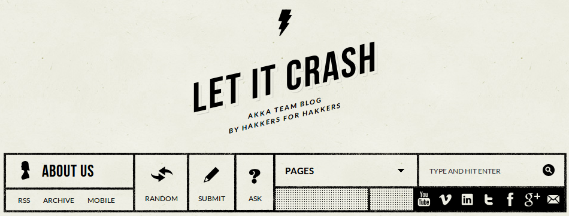
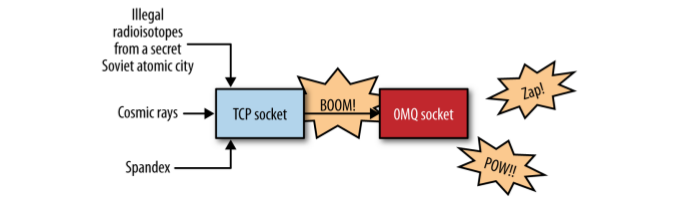
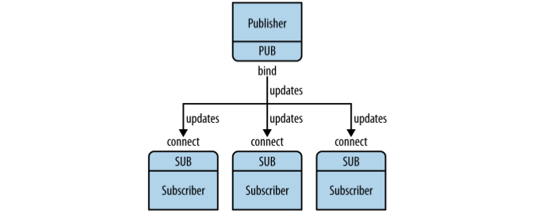
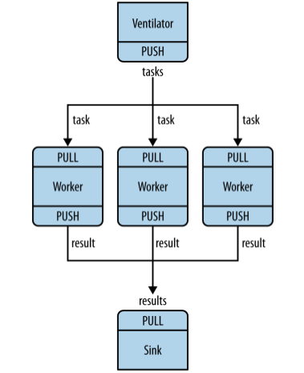
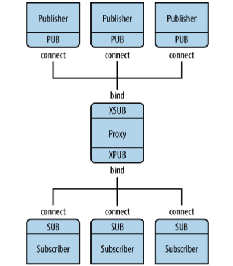
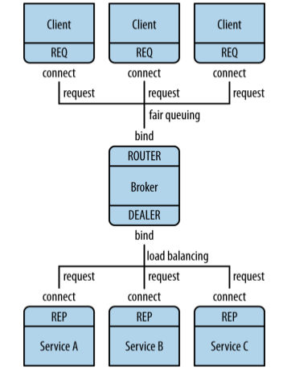

Distributed and Fault
Tollerant Node.js
Presented by Brian Ehmann / @codelotus
Let me start by telling you a little about myself...
begins many of the cheesier presentations you'll suffer.
- Merlin Mann
Nobody is really "qualified" to give tech talks. We're all exploring and figuring it out. Just share what you've learned.
- Jeremy Kahn (@jeremyckahn)Motivation for this talk...
Let's talk about ZeroMQ
Sockets on steroids...
Transport Options
-
Unicast
- tcp://*:5556
- ipc://netflow.ipc
- inproc://fastjob
-
Multicast
- pgm
- epgm
Socket Types
- Publish
- Subscribe
- Request
- Response
- Push
- Pull
- Dealer - Fan out
- Router - Fan in
- Pair
Socket Patterns
- Pub <-> Sub
- Req <-> Rep
- Dealer <-> Rep
- Dealer <-> Router
- Dealer <-> Dealer
- Router <-> Router
- Push <-> Pull
- Pair <-> Pair
Request / Response
var zmq = require('zmq')
, req_socket = zmq.socket('req')
, rep_socket = zmq.socket('rep');
exports.response = function() {
rep_socket.bindSync('tcp://localhost:5890');
rep_socket.on('message', function(msg){
rep_socket.send(msg.toString() + " World!!");
});
};
exports.request = function() {
req_socket.connect('tcp://localhost:5890');
req_socket.send('Hello');
req_socket.on('message', function(msg) {
console.log('msg: %s', msg.toString());
});
}
Publish / Subscribe
Publish / Subscribe
var zmq = require('zmq')
, pub_socket = zmq.socket('pub')
, sub_socket = zmq.socket('sub')
, filter = 'pubsub';
exports.sub = function() {
sub_socket.subscribe(filter);
sub_socket.connect('tcp://127.0.0.1:3000');
sub_socket.on('message', function(msg) {
console.log('work: %s', msg.toString());
});
};
exports.pub = function() {
pub_socket.bind('tcp://127.0.0.1:3000', function() {
pub_socket.send("pubsub work");
pub_socket.send("bogus work");
});
}
Push / Pull
Push / Pull
var zmq = require('zmq')
, push_socket = zmq.socket('push')
, pull_socket = zmq.socket('pull');
exports.push = function() {
push_socket.bindSync('tcp://127.0.0.1:3000');
push_socket.send("some work");
};
exports.pull = function() {
pull_socket.connect('tcp://127.0.0.1:3000');
pull_socket.on('message', function(msg) {
console.log('work: %s', msg.toString());
});
}
Through a Proxy
Broker
Broker
var zmq = require('zmq')
, frontend = zmq.socket('router')
, backend = zmq.socket('dealer');
frontend.bindSync('tcp://*:5559');
backend.bindSync('tcp://*:5560');
frontend.on('message', function(data) {
backend.send(data);
});
backend.on('message', function(data) {
frontend.send(data);
});
Examples...
Upstart
Know Thy System

What is it...
Upstart is an event-based replacement for the /sbin/init daemon which handles starting of tasks and services during boot, stopping them during shutdown and supervising them while the system is running.
Features that make it great...
- Tasks and Services are started and stopped by events
- Events may be received from any other process on the system
- Services may be respawned if they die unexpectedly
- Supervision and respawning of daemons which separate from their parent process
- User services, which users can start and stop themselves
start on pubsub_start
start on runlevel [2345]
stop on pubsub_stop
stop on runlevel [016]
respawn
respawn limit 10 5
console log
env NODE_ENV=production
env APP_HOME=/vagrant/pub_sub_proxy/frontend
script
export NODE_PATH=/usr/lib/nodejs:/usr/lib/node_modules:/usr/share/javascript
exec /usr/bin/node $APP_HOME/app.js
end script
Examples...
But what about log file rotation?
Log Rotate is a program that rotates logs.
Controlled by config files in: /etc/logrotate.d/
/etc/logrotate.d/upstart
/var/log/upstart/*.log {
daily # rotate logs every day
missingok # don't generate errors if file is missing
rotate 7 # number of times to rotate before deleting / mailing
compress # compress old logs with gzip
notifempty # don't rotate if file is empty
mail archive@example.com # where to send old logs to
}